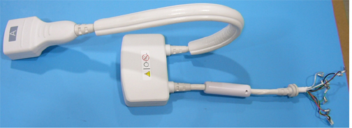

Operating Documentation
Direction 5500113, Rev# 3
Discovery MR750 3.0T Service Methods
Module Version 8.0, Version Date 3/23/10
Operating Documentation |
| Required Persons | Preliminary Reqs | Procedure | Finalization |
|---|---|---|---|
| 1 | Not Applicable | 30 mins | Not Applicable |
This document contains the cable replacement procedure for the 3T HD 8-Channel CTL Coil (GE/USAI catalog M3335LM). The field replaceable units and additional accessories for the 3T HD 8-Channel CTL Coil are listed in this document.
| Item | Qty | Effectivity | Part# | Manufacturer | |
|---|---|---|---|---|---|
| Standard Tool Kit | 1 | - | - | - | |
| Item | Qty | Effectivity | Part# | Manufacturer | |
|---|---|---|---|---|---|
| GE 3T HD 8-Channel CTL FRU Cable | 1 | - | 2417542 | - | |
Remove coil bottom cover by removing all screws around the perimeter and down the center of the base.
Remove the cable clamp (w/ 4 screws) that holds down the cable assembly (see Illustration 1).
Illustration 1: Cable Assembly and the Interface Board

Disconnect the SMB plugs (CH1-CH8) and DC plug on the cable end from the interface boards.
Remove the old cable assembly. See Illustration 2.
Illustration 2: CTL Coil Cable Assembly

Attach the new cable assembly (see Illustration 2) to the coil and make sure the cable strain relief matches the notch of the former (see Illustration 3). The side with Do Not Loop label of the in-cable box should face down (see Illustration 3). If it does not face down, rotate the strain relief. Make sure that the cable clamp holds the cable jacket, and then tighten the cable clamp with the four screws.
Illustration 3: Cable Assembly Installation

Connect all eight SMB plugs (CH1-CH8) and the DC Plug to the corresponding receptacles on the interface board. The receptacles are marked CH1-8 to correspond with the labels on the cables. Do not route RF cables and DC wires above the bosses shown in Illustration 1; otherwise, the corresponding bosses on the bottom cover will squeeze the cables and DC wires when the bottom cover is closed.
Refer to Table 1 for the 3T HD 8-Channel CTL Coil FRUs.
Table 1: Field Replaceable Units
| Description | GE Part # |
| GE 3.0T HD 8-Channel CTL Array Coil | 2417540 |
| GE 3.0T HD 8-Channel CTL Array Cable | 2417542 |
| Legacy 3T 8-Channel CTL Phantom CT Section | 2381682-9 |
| Legacy 3T 8-Channel CTL Phantom TL Section | 2381682-10 |
| TL Unified Phantom | 5343347-2 |
| Large Cylindrical Unified Phantom | 5342679-2 |
Refer to Table 2 for the 3T HD 8-Channel CTL Coil additional accessories.
Table 2: Additional Accessories (Not FRU's)
| Description | GE Part # |
| Patient Comfort Pad | 2417543 |
| Ear Pad Set | 2414538 |
| Disposable Ear Pad Covers | 2380634-8 |
No finalization steps.